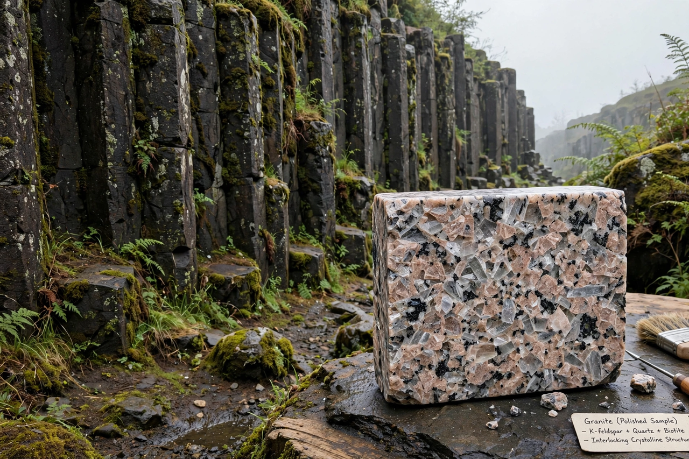

Igneous rock

| Igneous rock | |
|---|---|
| Formation | Cooling and solidification of magma or lava |
| Main types | Intrusive (plutonic), extrusive (volcanic) |
| Common examples | Granite, basalt, gabbro, rhyolite, obsidian, pumice |
| Texture | Phaneritic, aphanitic, glassy, pyroclastic |
Igneous rock (from the Latin word ignis, meaning fire), or magmatic rock, is one of the three main rock types, the others being sedimentary and metamorphic rock. Igneous rocks are formed through the cooling and solidification of magma or lava.
The magma can be derived from partial melts of existing rocks in either a planet's mantle or crust. Typically, the melting is caused by one or more of three processes: an increase in temperature, a decrease in pressure, or a change in composition. Solidification into rock occurs either below the surface as intrusive rocks or on the surface as extrusive rocks. Igneous rock may form with crystallization to form granular, crystalline rocks, or without crystallization to form natural glasses.
Igneous rocks occur in a wide range of geological settings: shields, platforms, orogens, basins, large igneous provinces, extended crust and oceanic crust. They make up roughly 95 percent of the upper part of the Earth's crust by volume, but their relative abundance is hidden at the surface by a comparatively thin but widespread layer of sedimentary and metamorphic rocks.
Classification
Igneous rocks are divided into two broad categories. Intrusive or plutonic rocks form when magma cools slowly beneath the surface, allowing large crystals to grow; granite and gabbro are typical examples. Extrusive or volcanic rocks form when lava erupts onto the surface and cools rapidly, producing fine-grained or glassy textures; examples include basalt, rhyolite, and obsidian.
Rocks are also classified by chemical composition, particularly silica (SiO2) content: felsic rocks contain more than about 63 percent silica and are rich in feldspar and quartz; intermediate rocks contain 52–63 percent; mafic rocks contain 45–52 percent and are rich in magnesium and iron; and ultramafic rocks contain less than 45 percent silica.
Textures
The texture of an igneous rock reflects its cooling history. Slow cooling produces a phaneritic texture of visible interlocking crystals, while rapid cooling produces a fine-grained aphanitic texture. Extremely rapid cooling yields a glassy texture, as in obsidian. Explosive eruptions produce pyroclastic textures composed of fragments of ash, pumice and rock. Large crystals set in a finer groundmass form a porphyritic texture, evidence of two stages of cooling.
Importance
Igneous rocks are significant because their minerals and textures record the conditions under which they formed, their radiometric ages date geological events, and they host important ore deposits of metals such as gold, copper, chromium and platinum. The oceanic crust is composed almost entirely of basalt and gabbro, while granite dominates the cores of continents.
See also: Volcano · Pluton · Bowen's reaction series · Large igneous province